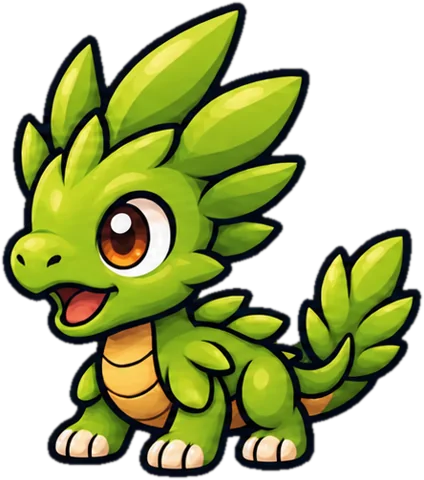

 GrassDragon
GrassDragonTap a stage to read its story.
Frondyte is a small upright lizard-type creature covered in bright green spines from crown to tail tip. Its large golden eyes regard the world with a calm, measuring look far older than its small body suggests. It hatches near the outer cool-stone ring of the Lava Crater where green mosses manage to grow despite the heat, and it spends its days eating those mosses while the crater's warmth radiates up through the rock beneath it. The combination of volcanic mineral-soil and cool green growth gives this hatchling a constitution that surprises everything that tries to outrun it.
Field note: Frondyte's spines absorb volcanic mineral steam from the crater air; each spine contains trace amounts of obsidian that crystallizes slowly over its lifetime.
Lava Crater. Frondyte and its family are found in the Lava Crater. See everyone who lives there.
Share a Bond Food that matches its types to become friends. Frondyte loves:
A Bond Food is not a trick. It joins your spirit with the Kimuro's spirit, and only when it chooses you.
Print the Kimuro adventure packs: mazes, cards, a board game and Bond Mark medals.
See the printable packs